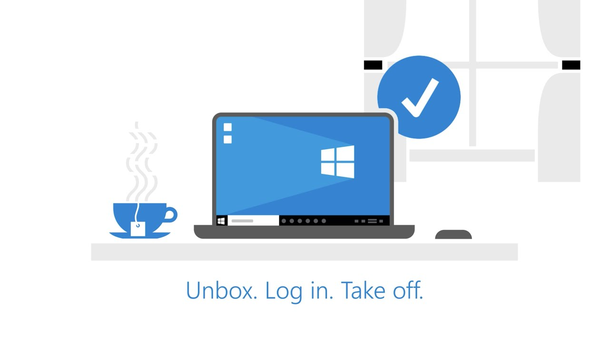

Windows Autopilot: Zero‑Touch at Scale
Designing Autopilot and Intune-based provisioning so standard laptops are ready in 30 minutes or less.



Modern Device Management
Windows Autopilot: Zero‑Touch at Scale
Standardised builds, compliant devices, and a smoother day‑one experience for new starters.
This work focuses on modernising device lifecycle management with Windows Autopilot and Intune—moving from manual imaging to repeatable, policy-driven deployments. Zero‑touch provisioning means devices ship directly to users and arrive already joined, configured, and ready for work.
Objectives
- Reduce device provisioning time and manual steps (target < 30 minutes for standard builds).
- Ensure new devices land in a known-good, compliant state from first sign-in.
- Make the rollout repeatable across locations, roles, and hardware models.
Responsibilities
- Built and maintained Autopilot profiles and enrollment flows for standard user personas.
- Configured Intune device and configuration profiles to enforce baseline security and UX.
- Worked with operations to define handover processes, documentation, and troubleshooting paths.
- Monitored Autopilot and enrollment success rates, iterating to remove failure patterns.
Technologies & Tools
- Microsoft Intune
- Autopilot
- Azure AD / Entra ID
- PowerShell
Impact & Outcomes
- Provisioning time reduced to under 30 minutes for standard laptops.
- New‑hire day‑one experience improved with predictable, fully configured devices.
- Lower support effort for device builds thanks to consistent, policy-based setups.
Project information
- Category: Modern Device Management
- Client: Enterprise Environment
- Project window: 2023 – 2025
- Back to Portfolio